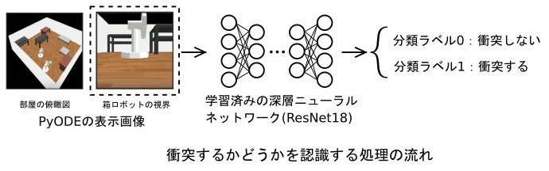

PyODEの物理演算+深層学習(ResNet18)
: ロボットビジョン1
「二輪箱ロボットの衝突回避」
box_robo_vision1_glfw_shader.pyの実行例
箱ロボットの視界から障害物に衝突するかどうかを判定して、衝突しない方に進みます。
衝突するかどうかの判定は、学習済みの深層学習モデル(ResNet18)が行います。
ResNet18の学習は、左側の動画の3D空間から作成した学習用画像を使って行いました。
左側の動画は、学習用画像と同じ環境で衝突回避を行っています。
右側の動画は、今回の学習済みモデル(ResNet18)にとっては、未知の環境ですが、上手く衝突回避することが出来ました。

box_robo_vision1_glfw_shader.pyの実装
ODE-0.16.4付属のtutorial3.pyを変更してbox_robo_vision1_glfw_shader.pyを作成しました。GLUをGLFWに変更して、シェーダーで描画しました。
box_robo_vision1_glfw_shader.pyのソースコード
深層学習モデル(ResNet18)の学習
今回は、3843パターンの学習用画像を作成し、深層学習モデル(ResNet18)の学習に使いました。 小規模なデータセットの「CIFAR-10」でも画像数は6万枚なので、 今回の3843パターンの学習画像は少なすぎですが、深層ニューラルネットワークを使った機械学習ということで、「深層学習」という言葉を使っています。